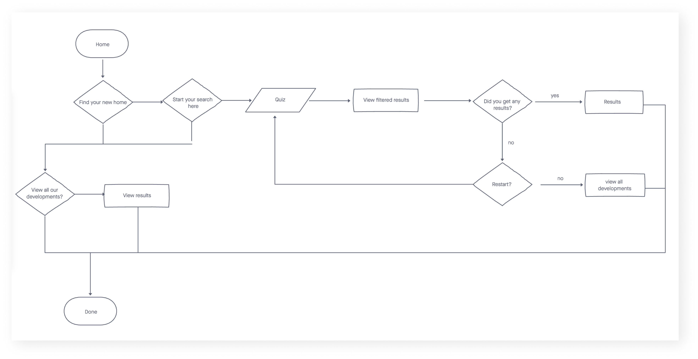
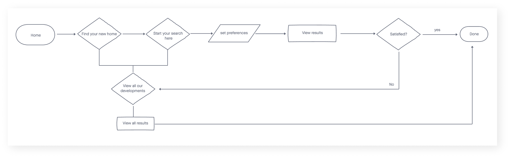
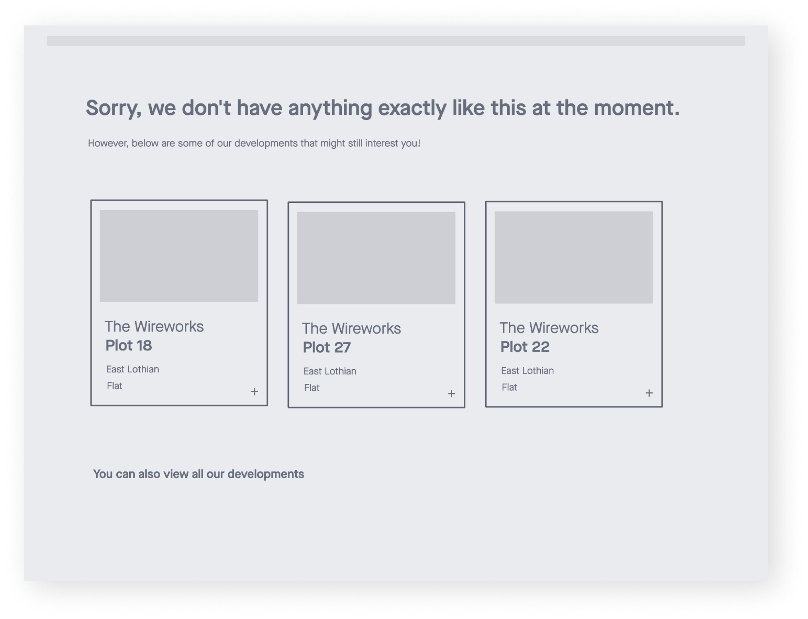
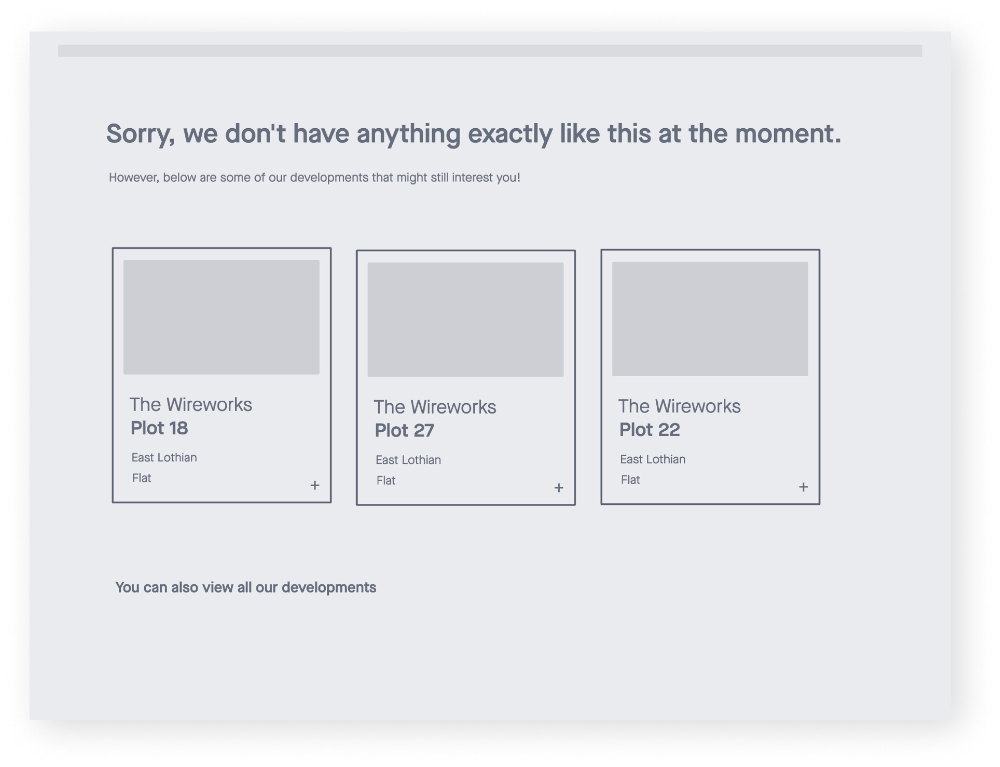
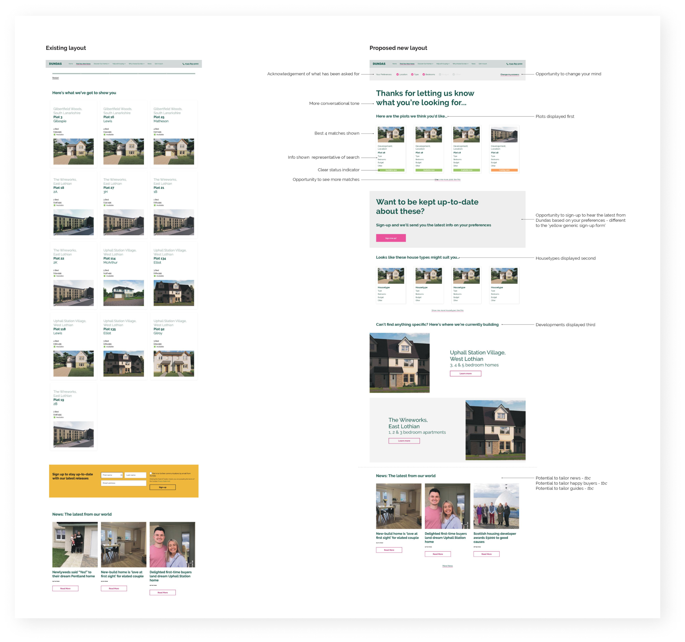

Find Your New Home
UX/UI Design
Overview
The client was a development in Scotland that offers a tool on their website to assist potential buyers in finding their dream home. I was assigned the task of reimagining the "Find Your New Home" tool on their website.
Problem
The existing "Find Your New Home" tool was failing to meet user needs. The tool discarded any house or flat that didn't meet all of the buyer's demands, resulting in zero results for most users. Additionally, if users wanted to change any parameters, they had to return to the home page and redo the entire test.
Objective
The objective of this project was to rethink the tool in order to deliver satisfactory results to users, by identifying and addressing the user's pain points within the application, while keeping in mind the cost of developing.
Process
To identify the pain points in the tool, I created a user flow to gain a better understanding of how users navigate through it. Furthermore, I conducted user testing with four individuals who fell within our client's target demographic: first-time buyers and downsizers.
Through this process, I identified three pain points:
- No results being displayed.
- The need to restart the test when changing preferences.
- Unnecessary questions that didn't apply to the user's preferences (e.g., asking about gardens when flats were selected).
The overall feedback for the tool was a mix of promise and disappointment. During the user testing, I noticed that people often have different preferences and are willing to be flexible. For example, a home might have fewer rooms than desired, but the price could be within budget. Users were missing out on potential matches due to rigid criteria. I confirmed this observation through desktop research, which revealed that buyers now prioritize different features, influenced by factors such as the COVID-19 pandemic and energy crisis, with location becoming less important. With the pain points identified, we began brainstorming ideas.
Brainstorming
We started off with a brainstorming session where we focused on reframing the problem and coming up with solutions.
Afterwards, we worked on the new user flow that would improve the experience for all users.
The next steps were to come up with some sketches and wireframes based on the new ideas and information gathered. My initial focus was to ensure that the tool provided results in most, if not all, cases. I came up with the idea of matching buyers with potential dream homes, rather than a single dream home. Since certain features are negotiable and vary among individuals, it seemed wasteful not to show nearly perfect matches. I sketched a results page that displayed matches ranging from perfect to okay, giving users a chance to find unexpected options that might be even better. In case there were to be any technical difficulties with this idea, I created a second version that doesn't display or organize the results by the best to least perfect match. Instead, it would just show results that came close enough to the buyer's preferences. I then proceeded to create some wireframes for both.
 

I presented this idea to the head of design and the art director, and both were well-received. After a brief discussion, we all agreed on the second option, due to its simplicity.
Next, I focused on the proposal for the new display of the entire results page. Once the wireframes were done, the Head of Design continued from there and completed the design.
Afterwards, we aimed to streamline the process of changing preferences. Instead of forcing users to restart the test from the home page, I proposed adding a "Change Preferences" option on the result page. This would allow users to modify their preferences individually, making the process faster and more user-friendly. However, due to time and technical constraints, we compromised by making it easier to retake the test to change preferences. We added a button that provided quick access to the test from the result page and added the preferences selected by the user at the top.
A similar issue arose with the "unnecessary questions" at the end of the test. Originally, the plan was to have different questions for flats and houses. However, once again, due to time and technical limitations, we decided to remove those questions until the feature could be properly implemented. As a temporary solution, we agreed on eliminating those questions entirely.
Outcome
The updated version of the "Find Your New Home" tool was successfully implemented on the website.